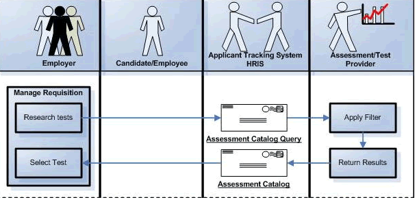
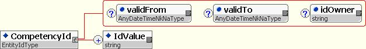
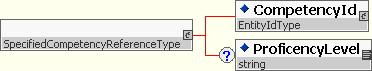

CompetencyTypes
Recommendation, 2007 April 15
Editor:
Chuck Allen, HR-XML
Contributors:
Drew Cox, ePredix; Kim Bartkus, HR-XML Consortium; Paul Kiel, HR-XML Consortium; Romuald Restout, Humanuo; Claude Ostyn, IEEE Learning Standards Committee Liaison; Paul Storfer, InScope; Kathi Dolan, Manpower; Jon Lehto, Monster.com; David Scott, Oracle; Christine Lu, Oracle
Copyright © 2007 HR-XML Consortium, Inc.
Abstract
This documents the reusable data types available within the ComptencyTypes schema. This first version of this schema includes a global element and data type for referencing competencies. Other reusable competency-related data types may be added in the future.
Table of Contents
1.2.4 Specified Competency Reference. 4
2.3 Relationship to Other Projects. 4
2.3.1 HR-XML Competency Schema
3.3 Implementation Patterns / Recommendations
3.3.2 Recommended Pattern for Competency Identifiers
3.3.3 Alternative Patterns for Competency Identifiers
3.3.4 SpecifiedCompetencyReferenceType
4.1.2 SpecifiedCompetencyReferenceType
5 Appendix B – Related Documents
1 Overview
1.1 Objective
The CompetencyTypes schema is intended as a schema to hold data types and reusable components related to competencies. This schema is designed to be included in other HR-XML schemas. The first version of the schema includes two simple components, a globally scoped element called “CompetencyId” and a data type named “SpecifiedCompetencyReferenceType”. These components are explained in the sections that follow.
1.2 Terminology
1.2.1 Competency Id
An identifier that can be used to reference a single competency within a taxonomy or an identifiable cluster, node, or grouping of competencies within such a taxonomy. For further information, see Section 3, Competency References.
1.2.2 Proficiency Level
Broadly speaking, a proficiency level is a rating or point on a scale indicating the amount or extent of a competency measured, observed, or required.
Many competency dictionaries or taxonomies include a proficiency scale applied across competency definitions. Some competency taxonomies may not follow this pattern and have proficiency expressed in a way that is tied to competency definition or that can be referenced directly by a competency identifier.
1.2.3 Proficiency Scale
Within formal competency taxonomies, proficiency usually is expressed upon some type of scale.
The ProficiencyLevel element defined within the CompetencyTypes schema is a string. It is intended to accommodate numeric as well as non-numeric data. It includes no attributes relating to scale. One of the important design assumptions is that trading partners understand and agree upon the scale for the proficiency level data they exchange. It is assumed that the proficiency level values are appropriate and meaningful within the scale for the target competencies being referenced. This assumption greatly simplifies data exchange and is consistent with many use cases.
ProficiencyLevel is locally scoped within the SpecifiedCompetencyReferenceType and therefore will not constrain or collide with any future HR-XML work that might focus upon a richer definition to express and exchange information about scales.
1.2.4 Specified Competency Reference
The term “Specified Competency Reference” was chosen to distinguish, where necessary, references to a “base” or “generic” definition of a competency and a reference to a competency at a particular proficiency level. The SpecifiedCompetencyReferenceType provides for the latter capability. It pairs a CompetencyId element optionally with a ProficiencyLevel element. As mentioned within Section 1.2.2, Proficiency Level, there are differences in the structure and design of competency dictionaries/taxonomies. The CompetencyId and SpecifiedCompetencyReferenceType provide flexible options for constructing references in a way that is not dependent on a particular type of taxonomy design or structure.
2 Scope
2.1 Inside Scope
- Practical exchange of competency references. This specification provides a flexible means for trading partners to referencing a known competency by its identifier. The CompetencyId and SpecifiedCompetencyReferenceType are global components that schema designers can use flexibly to accommodate a variety of exchange scenarios.
2.2 Outside Scope
- Competency taxonomies. This specification does not address or recommend a particular means of structuring taxonomies nor does it provide for the exchange of taxonomies. This latter topic may be taken up in the future, but is not part of the current scope of work.
- Proficiency levels. The specification does not prescribe a methodology or means of associating proficiency levels with competencies but does it attempt to accommodate common practices in recommended patterns for constructing competency references.
- Proficiency level scales. This specification does not define a scale, a means of expressing scales, or the metadata necessary to understand, normalize, or compare different scales. See Section, 1.2.3, Proficiency Scale, above. This topic may be taken up in the future, but is not part of the current scope of work.
2.3 Relationship to Other Projects
2.3.1 HR-XML Competency Schema
The data types covered in this first version of the schema are not intended to overlap or conflict with HR-XML’s existing Competency specification.
2.3.2 E-Learning Standards
The recommendations for constructing competency identifiers (see Section 3.3.2, Recommended Pattern for Competency Identifiers) take into consideration the prior work and current directions of the IEEE Learning Technology Standards Committee and the IMS Global Learning Consortium, Inc. These groups seek to support identifiers that are “persistent,” “globally unique,” and “location-independent.”
3 Competency References
3.1 Overview
In many HR business processes, trading partners work with a pre-agreed upon competency taxonomy or otherwise known set of competency definitions. In many transactions, it is not necessary or desirable to communicate an entire competency definition or the taxonomy. Rather, in many contexts it is much more efficient and useful to merely communicate the identifier for a competency definition that the trading partners can access and understand by relying on a prior agreement or exchange of information.
The CompetencyTypes schema contains a global element (global, in the sense that it can be referenced directly in any schemas within the HR-XML namespace) and a data type intended to be used by HR-XML schema designers in the construction of competency references. The sections below describe these components and recommend a pattern for HR-XML schema designers to use in constructing competency references within HR-XML Schemas.
3.2 Use Cases
There are a wide variety of HR business processes that require trading partners to reference competencies. An immediate use case driving the work of the Competency Workgroup was a requirement from the HR-XML Assessment workgroup to support the query of test catalogs by competency.
As depicted in Figure 1: HR-XML Assessment Catalog Query, an employer’s HR specialist may want to query an assessment provider’s catalog of tests to discover tests that measure competencies related to success in a particular job. In the Assessment Catalog use case, the Catalog Query includes a filter string, which can reference competencies within a known or agreed upon taxonomy. After applying the filter, the assessment provider would return information about assessments for the specified competencies. The AssessmentCatalog result optionally allows a list of "CompetenciesAssessed," which are identifiers for the competencies to be measured. Using the results of such a query (as well as other expert advice and research), the specialist could add particular test packages to the applicant tracking system’s hiring workflow for a particular position. For further information, please refer to the documentation for CompetencyCatalog (See Appendix B – Related Documents).

Figure 1: HR-XML Assessment Catalog Query
3.3 Implementation Patterns / Recommendations
3.3.1 Use of EntityIdType
The CompetencyTypes schema includes the globally scoped element “CompetencyId”. CompetencyId is recommended as the primary way to construct references to competency definitions. CompetencyId makes use of HR-XML’s EntityId schema and is of the type “EntityIdType”. (see separate specification titled “Entity Identifiers” referenced within Appendix B – Related Documents).
3.3.2 Recommended Pattern for Competency Identifiers
For maximum efficiency and interoperability, HR-XML recommends that each competency or node within a competency taxonomy be identifiable by a Uniform Resource Name (URN) as defined within RFC 2141 and RFC 2396, as amended by RFC 2732.
A URN follows this syntax:
urn: [Namespace Identifier] : [Namespace specific string]
RFC 2141/2396/2732 requires that the Uniform Resource Name remain globally unique and persistent. Note that RFC 2141/2396/2732 requires encoding of reserved characters.
Example:
<CompetencyId>
<IdValue>urn:SkillSourceX:A0BA2874-82D5-49AB-8929-CD6E99BE5656-1</IdValue>
</CompetencyId>
3.3.3 Alternative Patterns for Competency Identifiers
While HR-XML recommends the use of URN-based competency identifiers, at the time of this writing, competency content providers do not commonly follow such a convention. Publishers of competency taxonomies typically use proprietary identifier schemes or lack a formally articulated identifier scheme altogether. In such cases, the flexibility of the EntityIdType structure can be used to capture proprietary identifier schemes or descriptive “facet” identifiers.
Example:
<CompetencyId idOwner="SkillSourceX" validFrom=”2005-01-01” validTo=”2007-01-01”>
<IdValue
name="Catalog">Executive</IdValue>
<IdValue
name="Competency
Class">Decision
Making</IdValue>
<IdValue
name="Code">452</IdValue>
</CompetencyId>
3.3.4 SpecifiedCompetencyReferenceType
Some use cases require a trading partner to reference a competency definition by an identifier, but to also pass along certain modifying or supplementary information. A common modifier is proficiency level, which refers to a rating of the degree or extent of the competency. The intent might be to reference a single competency definition and to express different proficiency levels that might be required by a position or possessed by a human resource. To accommodate this type of need, a “SpecifiedCompetencyReferenceType” has been created that includes a CompetencyId and an optional “ProficiencyLevel”. ProficiencyLevel is defined as a string so that it might accommodate both numeric and non-numeric ratings. No attributes relating to the ProficiencyLevel scale are necessary. Because this is a reference to a definition within a known and pre-agreed upon taxonomy, it is assumed that the sending organization will provide a proficiency level value that is meaningful within the proficiency level scale for the target competency.
Example:
<SpecifiedCompetencyReference>
<CompetencyId>
<IdValue>urn:SkillSourceX:A0BA2874-82D5-49AB-8929-CD6E99BE5656-1</IdValue>
</CompetencyId>
<ProficiencyLevel>9.5<ProficiencyLevel>
</SpecifiedCompetencyReference>
Note that the global element, SpecifiedCompetencyReference, is defined in the schema, but it is assumed that schema designers would generally use the SpecifiedCompetencyReferenceType with an element name relevant to the specific business context.
3.3.5 Extensions
A first use of SpecifiedCompetencyReferenceType is in the HR-XML AssessmentCatalog schema. That schema includes a “CompetencyAssessed” element that is an extension of the type SpecifiedCompetencyReferenceType.
The CompetencyAssessed element extends the base SpecifiedCompetencyReferenceType by allowing for an optional CompetencyName. For further information, please refer to the documentation for CompetencyCatalog (See Appendix B – Related Documents).
4 Schema Design
The following sections illustrate and explain the components of the HR-XML Consortium’s Competency Schema.
4.1.1 CompetencyId

4.1.2 SpecifiedCompetencyReferenceType

4.1.3 Element Definitions
|
Elements and Attributes
|
ContentModel |
Definition |
|
/ SpecifiedCompetencyReference |
- SpecifiedCompetencyReferenceType - (1/1) |
This is a globally scoped element that implements SpecifiedCompetencyReferenceType. This data type is available for use in HR-XML schemas for referencing a competency definition paired with a specific proficiency level. BusinessRule(s): Typically, HR-XML schema designers would use SpecifiedCompetencyReferenceType with an element name that is contextually relevant. |
|
/ SpecifiedCompetencyReference/ |
- EntityIdType - S (1/1) |
An identifier used to identify or reference a
competency definition or node within a competency taxonomy. |
|
/ SpecifiedCompetencyReference/ |
- xsd:string - S (0/1) |
Broadly speaking, a proficiency level is a rating on a prescribed scale indicating the amount or extent of a competency measured, observed, or required. |
4.1.4 Global Types
|
/ |
CompetencyId - EntityIdType
- S (1/1) |
A data type is available for use within HR-XML schemas for constructing references to a competency definition paired with a specific proficiency level. Example: HR-XML’s AssessmentCatalog schema has a CompetenciesAssessed element that extends the SpecifiedCompetencyReferenceType. |
|
. |
* This column shows a simple form of the content model for readability. Because of complex structures such as groups and nested occurrences, all of the content may not be included here. |
|
5 Appendix B – Related Documents
|
Reference |
Link |
|
Assessment Catalog Schema |
http://ns.hr-xml.org/2_5/HR-XML-2_5/Assessment/AssessmentCatalog.xsd |
|
Assessment Catalog Query Schema |
http://ns.hr-xml.org/2_5/HR-XML-2_5/Assessment/AssessmentCatalogQuery.xsd
|
|
Assessments Document |
http://ns.hr-xml.org/2_5/HR-XML-2_5/Assessment/Assessments.html
|
|
Assessment Catalog Examples |
http://ns.hr-xml.org/2_5/HR-XML-2_5/Assessment/AssessmentCatalog.xml
http://ns.hr-xml.org/2_5/HR-XML-2_5/Assessment/AssessmentCatalog2.xml
http://ns.hr-xml.org/2_5/HR-XML-2_5/Assessment/AssessmentCatalog3.xml
|
|
Assessment Catalog Query Examples |
http://ns.hr-xml.org/2_5/HR-XML-2_5/Assessment/AssessmentCatalogQuery.xml
http://ns.hr-xml.org/2_5/HR-XML-2_5/Assessment/AssessmentCatalogQuery2.xml
|
|
URN Syntax, ITEF 2141 |
http://www.ietf.org/rfc/rfc2141.txt |
|
Uniform Resource Identifiers (URI): Generic Syntax, ITEF 2396 |
http://www.ietf.org/rfc/rfc2396.txt |
6 Appendix B – Document History
|
Date |
Description |
|
2005 July 6 |
Draft circulated |
|
2005 July 13 |
Incorporated feedback / Typographical corrections and edits for clarity. |
|
2005 Dec 15 |
Minor edits from CPO review. |
|
2006-Feb-28 |
Approved by Consortium |
|
2007-Apr-15 |
Approved by Consortium |